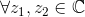
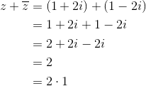
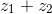
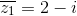

Numere complexe conjugate
Fie .
Definiția NC7: Numere complexe conjugate
Numărul complex se numește conjugatul lui  , fiind notat cu .
, fiind notat cu .
Deci conjugatul numărului  este numărul .
este numărul .
Exemplu:
Să se determine conjugatul următoarelor numere complexe:
- ;
- ;
- .
Rezolvare:
.
Propoziția NC8: Proprietăți ale numerelor complexe conjugate
- Suma a două numere complexe este un număr real:
pentru orice 
- Produsul a două numere complexe conjugate este un număr real:
pentru orice
Demonstrație:
Fie . Atunci conjugatul său va fi .
Calculăm  folosind formule de calcul prescurtat, astfel:
folosind formule de calcul prescurtat, astfel:
Dar  , deoarece atât
, deoarece atât  , cât și
, cât și  sunt numere reale.
sunt numere reale.
În concluzie, produsul a două numere complexe este număr real.
- Conjugatul sumei a două numere complexe este egal cu suma conjugatelor celor două numere complexe:
pentru orice
Demonstrație:
Fie numerele complexe și .
Suma celor două numere este:
Atunci, conjugatul sumei celor două numere complexe este:
Deci pentru orice
- Conjugatul produsului a două numere complexe este egal cu produsul conjugatelor celor două numere:
pentru orice
Demonstrație:
Fie și două numere complexe, având conjugatele și  .
.
Produsul celor două numere complexe este:
Formula de mai sus s-a dat în capitolul anterior, la secțiunea "Înmulțirea numerelor complexe".
Conjugatului produsului numerelor date este:
.
Calculăm .
.
- Conjugatul câtului a două numere complexe este egal cu câtul conjugatelor celor două numere:
oricare ar fi cu
Demonstrație:
Fie numerele complexe și , având conjugatele și .
Calculăm .
Atunci avem:
Deci oricare ar fi cu
- pentru orice

- oricare ar fi
Observații:
- Proprietatea de la punctul c. al Propoziției NC8 rămâne adevărată și pentru
 numere complexe , cu
numere complexe , cu  arbitrar. Atunci avem:
arbitrar. Atunci avem:
.
- Proprietatea de la punctul d. al Propoziției NC8 este adevărată și pentru numere complexe , cu arbitrar. Avem că:
.
Proprietățile numerelor complexe conjugate sunt:
- ;
- ;
- ;
- ;
-
 ;
; - ;
- .
Exerciții rezolvate cu numere complexe conjugate
- Să se arate că suma a două numere complexe conjugate este , unde . (Adică verificăm dacă are loc Propoziția NC8, a.)
Rezolvare:
Conjugatul numărului complex dat este .
Atunci, suma dintre numărul complex dat și conjugatul său este:

Dar .
Deci .
- Să se calculeze produsul dintre numărul complex și conjugatul său. (Verificăm dacă are loc Propoziția NC8, b.)
Rezolvare:
Conjugatul numărului dat este .
Calculăm .
Acest exercițiu ne confirmă încă o dată faptul că produsul a două numere complexe conjugate este număr real, oricare ar fi numărul complex considerat și conjugatul său.
- Să se calculeze știind că și
 . (Se verifică dacă are loc Propoziția NC8, c.)
. (Se verifică dacă are loc Propoziția NC8, c.)
Rezolvare:
Calculăm .
Atunci conjugatul sumei celor două numere este:
Calculăm .

Din relațiile  și
și  rezultă că are loc .
rezultă că are loc .
- Știind că
 și
și  , să se calculeze . (Verificăm dacă are loc Propoziția NC8, d.)
, să se calculeze . (Verificăm dacă are loc Propoziția NC8, d.)
Rezolvare:
Calculăm produsul celor două numere complexe date.
Atunci .
Calculăm .
Deci  .
.
- Să se calculeze pentru numerele complexe
 și .
și .
Rezolvare:
Numerele complexe date au conjugatele , respectiv .
Calculăm folosind relația din Propoziția NC8, e.
- Fie numărul complex . Să se arate că .
Rezolvare:
Calculăm .
Atunci
Dar
Deci .
Observație:
Procedând prin inducție, se poate deduce că:
. (Propoziția NC8, f.)
- Să se calculeze
 pentru numerele complexe și .
pentru numerele complexe și .
Rezolvare:
Calculăm .
Atunci, conform Propoziției NC8, g., avem că:
.